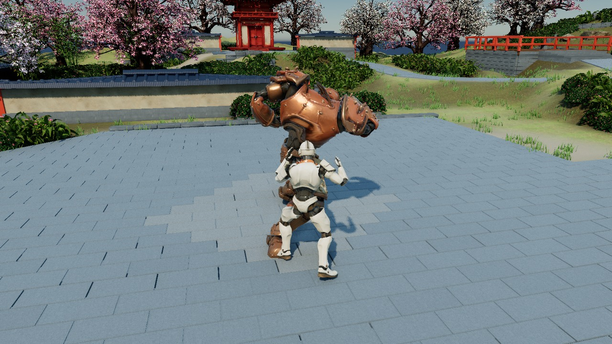

GameCrafter
An Agentic Framework for
Multi-Gameplay Game World Generation
Sakura Courtyard
Vermilion shrines, stone paths, and spring canopies.

The interactive diorama needs WebGL. The gameplay results below are still available.
Six miniature worlds. One coordinated creation framework.
See the playable results ↓A world you can
actually play.
GameCrafter turns high-level instructions into coherent 3D game worlds where exploration and boss combat share the same executable environment. Specialized agents coordinate scene construction, character creation, animation, and gameplay across generative models, Blender, and Unreal Engine.
Four stages connect specification-guided orchestration, structure-aware asset synthesis, multi-gameplay world realization, and closed-loop quality control. The resulting worlds support three camera views and synchronized multimodal observations.

Many worlds. Playable from every perspective. Dune Court demonstrates two gameplay modes, three camera views, and aligned multimodal observations. The central disc is a representative 3D overview.
Full-resolution figureAbstractRead the full abstract
Recent advances in generative models and agentic workflows are making it increasingly feasible to automate game creation. These workflows offer a path from high-level user intent to playable worlds. However, existing systems largely focus on isolated assets, scene construction, or games centered on a single gameplay pattern, leaving coherent multi-gameplay 3D world generation underexplored. Generating such worlds requires coordinating scene construction, character creation, gameplay implementation and different software tools. To this end, we present GameCrafter, an agentic framework for scalable multi-gameplay game world generation. The long and interdependent production process makes consistent coordination across specialized agents and tools particularly challenging; GameCrafter addresses this with Specification-Guided Orchestration under shared production requirements. Moreover, visual plausibility alone does not guarantee gameplay readiness, motivating Structure-Aware Asset Synthesis that jointly models appearance and executable structure for environments and characters. These assets are then grounded in a shared executable runtime through Multi-Gameplay World Realization, allowing them to coexist consistently within the same world. Since errors can accumulate across stages and only become apparent after runtime integration, GameCrafter further employs Closed-Loop Quality Control, combining visual inspection, playtesting, and iterative repair. Beyond playable worlds, GameCrafter also produces synchronized multi-view, multimodal data aligned within the same simulation. Experiments demonstrate strong performance in visual quality, gameplay fidelity, and overall playability compared with existing game-generation approaches.
Specialists create.
Agents coordinate.
Four stages, from user intent to a verified game world.
Shared specifications connect agents and software.
Four stages connect design, production, and validation. A shared specification and artifact graph guide asset synthesis, runtime integration, and targeted repair.
Open PDF“Create a Japanese garden with cherry blossoms, branching paths, and a guardian Boss.”
↘Different worlds.
Shared possibilities.
Actual Unreal Engine captures.
Select a case to explore its results.
The world in miniature
Interactive authored geometryArchived gameplay showcase. Three perspectives above, aligned outputs below.
One world, three perspectives
One moment, five representations
Shared camera · shared frameRGB, metric depth, skeletons, semantic labels, and structural whitebox share the same camera and simulation time. Whitebox uses simplified scene geometry and articulated capsules. Depth and semantic images here are display previews.